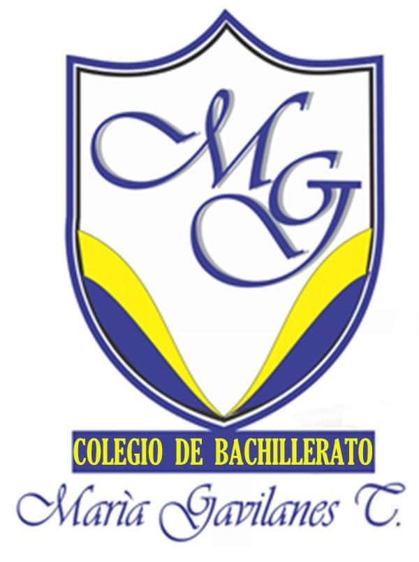
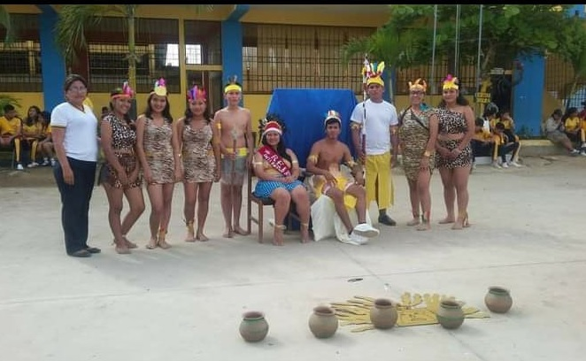
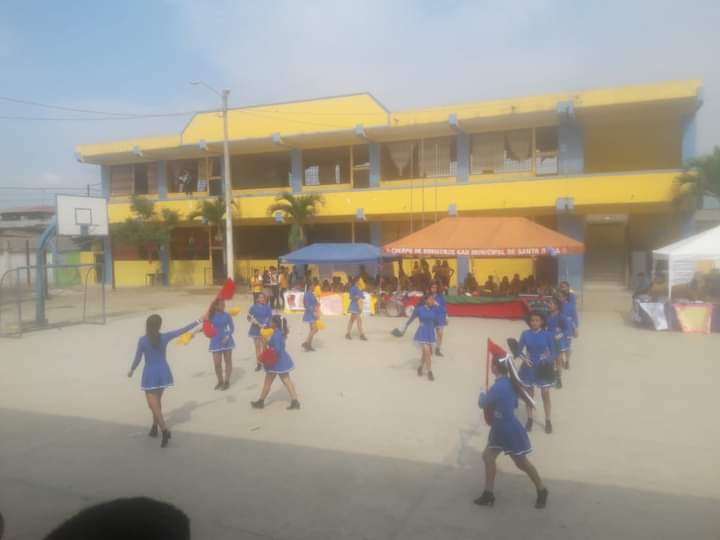
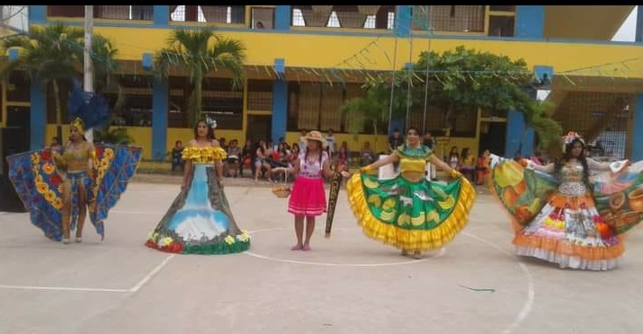

Colegio de Bachillerato "Maria del Carmen Gavilanes"
HISTORIA DEL COLEGIO




Debemos destacar que el día lunes 29 de octubre de 2007, nos trasladamos al local propio del colegio Antonio José de Sucre. Gracias a las gestiones de las autoridades del plantel, padres de familia, personal docente, administrativo y servicio, se realizan gestiones al Consejo Provincial
Teniendo como amiga a la Señora Bertha Tenezaca de Gavilanes, Ing. Luis Espinoza y otros que apoyaron el pedido para ayudar para la nueva construcción de otro Bloque de aulas, mismas que se realizaron con todo éxito, los méritos de Walter Carchi salen sobrando, comienza el Colegio a superar en matricula estudiantil, construcción de la planta física de dos plantas cada una, vale mencionar que los padres de familia han sido, son y serán el pilar fundamental en esta historia
La unión de los docentes y trabajo en equipo de todos los docentes hasta la vez. Consideramos necesario mencionar que hasta la actualidad se han incorporado numerosas promociones de Bachilleres en diferentes especialidades